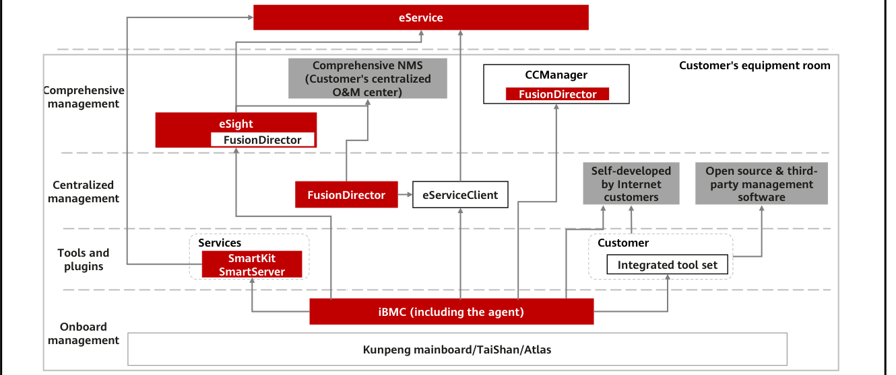
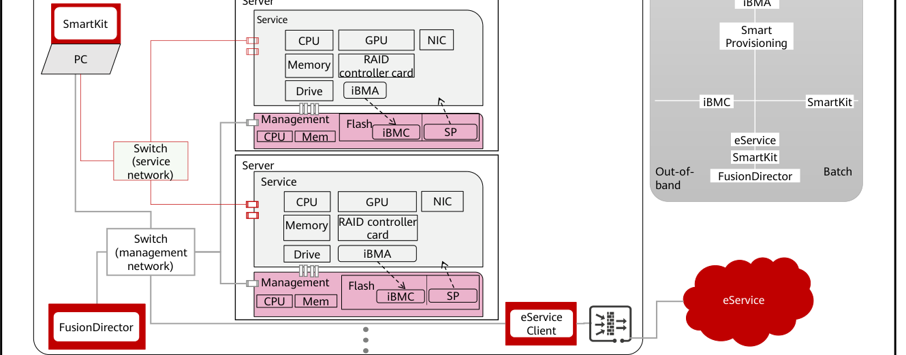
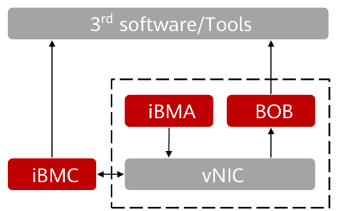
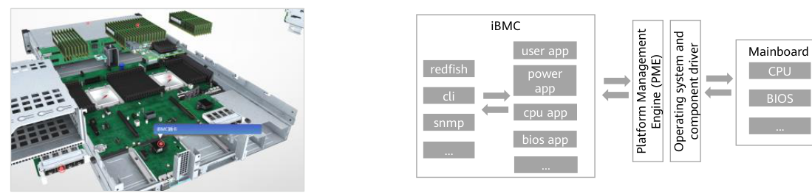
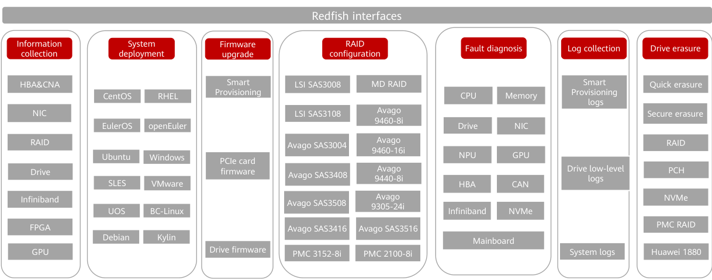

bobCmd) from Out-of-Band Management (iBMC on Hi1710/Hi1711 RTOS)Manual configuration + Scripts > Tools > Automation > Intelligence (Note: Intelligence is the ultimate goal, but the tool-based and automated phases CANNOT be skipped!).
| Huawei O&M Product | Positioning & Target Scenario / Customer (pp. 356–358) |
|---|---|
| iBMC | Single-node out-of-band onboard management controller (basis of all computing O&M; runs on Hi1710/Hi1711 Arm chip + RTOS + PME). |
| iBMA 2.0 | Single-node in-band management agent running on the host OS; communicates with iBMC via vNIC and BOB. |
| Smart Provisioning (SP) | Single-node out-of-band extension of iBMC running a diskless mini-system from iBMC flash in service memory (no CD-ROM needed). |
| SmartKit | Local O&M batch toolbox installed on service engineers' laptops for onsite delivery, maintenance, upgrade, and troubleshooting. |
| FusionDirector | Centralized management platform for enterprise customers (routine server monitoring, batch O&M, and 5 Intelligent Features). |
| eSight | Cross-domain centralized ICT management for large-sized customers / carriers (manages servers, storage, switches, routers, firewalls, WLAN, PON, cameras). |
| CCManager | Cross-stack and cross-domain management for data centers. |
| eService | 24/7 Remote O&M platform for long-tail customers (small device counts, unwilling to invest in dedicated O&M; provides Call Home). |
| HMM / IES | HMM (Hyper Management Module for X6800/E9000 chassis power/fan/IPMI 2.0); IES (Intelligent Edge System for Atlas 500 edge station). |


---
iBMA) vs. Out-of-Band (iBMC) Management (pp. 359–370)iBMA --> vNIC --> iBMC --> 3rd-party tool, or (2) iBMA --> vNIC --> iBMC --> vNIC --> BOB --> 3rd-party tool.bobCmd** CLI (persistent online configuration, does not support independent deployment).log/ethtool_log), Mellanox NIC internal error detection (log/common.log), storage diagnosis (Sense Code, MD SoftRAID), Memory soft isolation of faulty physical memory pages via Redfish, and black box.

---

iBMA->vNIC->iBMC->3rd and iBMA->vNIC->iBMC->vNIC->BOB->3rd), uses bobCmd for BOB CLI, traces ethtool in log/ethtool_log, and supports soft isolation of faulty physical memory pages over Redfish.